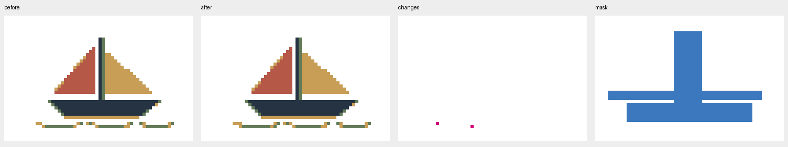
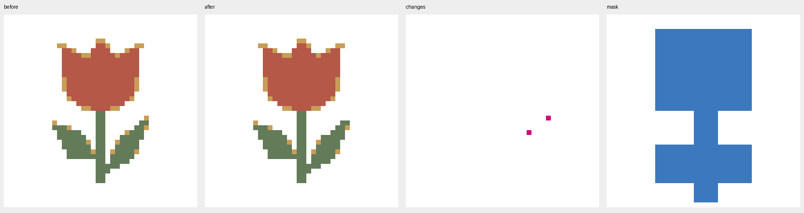
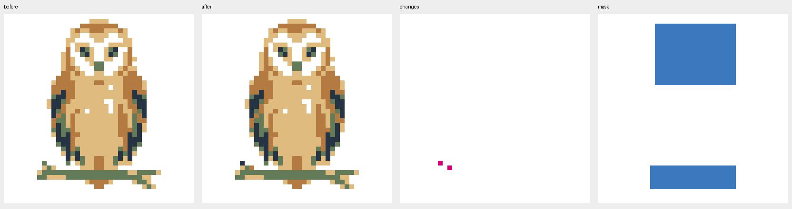
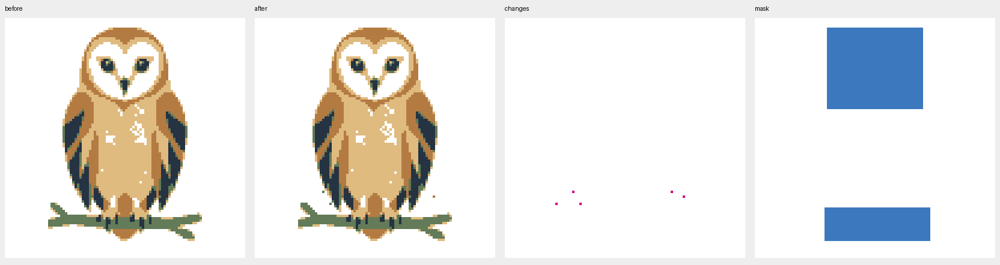
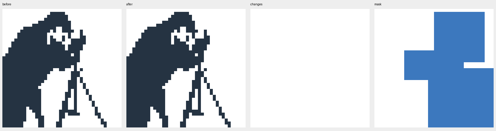
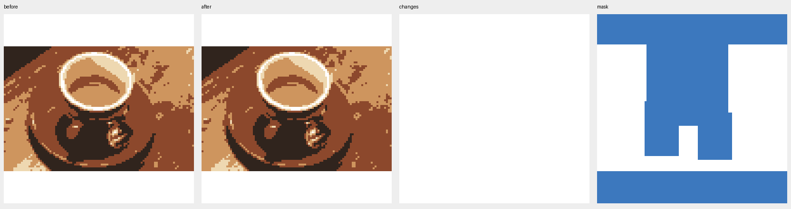
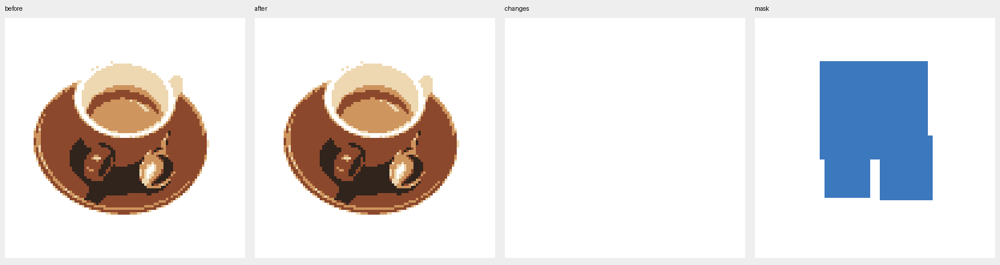
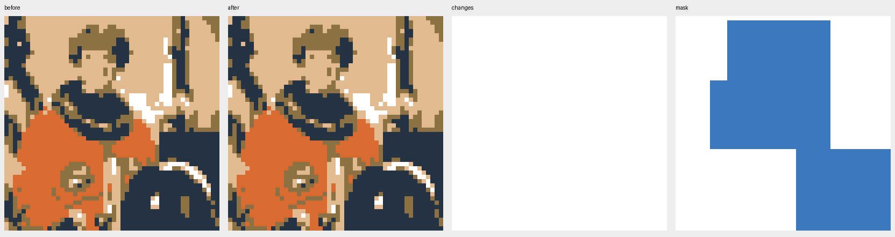
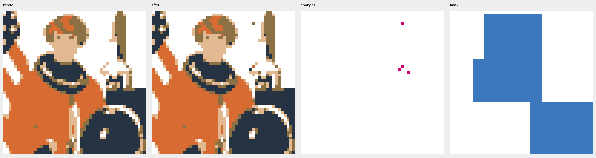

2 certificates; 6 exhausted searches; 1 time abort. No pilot release. All original files, clues, proofs and histories (ZIP) All 48 original results and 9 repairs
Mast, Segelluecke und Rumpf bleiben unveraendert. Zwei neue Farbzellen an den Wellen erzeugen zusaetzliches gelbes/gruenes Detail in der zuvor ruhigen Leerzone; Fortschritt 12 auf 4 offene Zellen, aber redaktionell verschlechtert und kein Zertifikat.

Zwei ochre Randzellen am rechten Blatt werden leer. Blattkontur etwas glatter; Bluete, Stiel, Blattanschluss und innere Keile erhalten. Eigenes Motivurteil positiv; 16 auf 0 offene Zellen, frischer Endproof.

Zwei Farbanpassungen am unteren linken Fluegel/Fussrand. Augen, Schnabel, helle Gesichtsinnenraeume und Astkontakte erhalten; Hauptform und Farbbild weiterhin Eule. 8 auf 0 offene Zellen; frischer Endproof.

Fuenf Aenderungen an unteren Federraendern erzeugen einzelne gruene/ochre Ausreisser und eine kleine helle Luecke. Augen/Gesicht/Fusskontakte geschuetzt und intakt, Silhouette lokal unruhiger. 394 auf 339 offene Zellen; Zeitabbruch, keine Freigabe.

Gewaehltes Ergebnis unveraendert. Gesicht/Kamera, Stativ und wichtige Leerzwischenraeume erhalten; weiterhin 242 offen. Mono-Enthuellungsbeitrag bleibt notwendig; keine neue Motiv- oder Logikfreigabe.

Gewaehltes Ergebnis unveraendert. Tassenrand, Kaffeeinnenraum, Henkelinnenraum, Loeffel und contain-Leerstreifen kontrolliert; weiterhin 14 offen, keine neue Freigabe.

Gewaehltes Ergebnis unveraendert. Gesamter Tassenrand, Kaffeeinnenraum, Henkel und Loeffel samt hellen Trennungen erhalten; weiterhin 13 offen, keine neue Freigabe.

Gewaehltes Ergebnis unveraendert. Gesicht, Halsring, dessen helle Leergrenzen und Helmvisier kontrolliert; bestehende Detailarmut erhalten, vier Zellen offen, keine neue Freigabe.

Gesicht, Halsring und Helm bleiben geschuetzt. Vier Hintergrund-/Raketenpixel erzeugen einen abgesetzten braunen Punkt und verschlechtern lokale weisse Abstaende/Farbkontur der Rakete rechts. 117 auf 81 offen, aber motivisch verschlechtert; kein Zertifikat.
